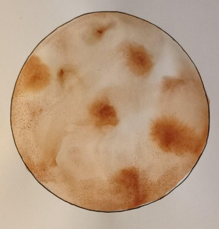

Мини-палачинки

Необходимо
| Продукти |
Коничество |
| 🥚Яйца🥚 |
1бр. |
| 🌾Брашно🌾 |
1/2 чаша |
| 🥛Мляко🥛 |
120мл. |
| 🧂Сол🧂 |
1 щипка |
| 🍚Захар🍚 |
1 супена лъжица |
Начин на проготвяне
- В малка купа разбий яйцето със захарта (ако използваш). Това може да стане с вилица или малък бъркалка. Целта е яйцето да се размие и да стане хомогенно.
- В същата купа добави 120 мл мляко и разбъркай добре.
- Постепенно добавяй брашното (60 г) и щипка сол. Разбърквай с вилица или лъжица, за да не се образуват бучки. Може да се получи малко по-гъста смес, но ако изглежда твърде гъста, добави още малко мляко.
- Загрей малко масло в тиган на средна температура. Може да използваш и антипригарен тиган, за да не е нужно толкова масло.
- Използвай лъжица или малка чаша, за да поставяш малки порции от тестото в тигана. Важно е да не слагаш твърде много тесто, за да не се слеят палачинките.
- Печи по 1-2 минути от всяка страна, или докато станат златисти и леко хрупкави.
- Може да сервираш палачинките със сироп, мед, пресни плодове или дори малко разтопен шоколад.
Малки и бързи за приготвяне, точно като бързото движение на Меркурий около Слънцето.
Меркурий

Факти
- Меркурий е най-близката планета до Слънцето и обикаля около него за само 88 земни дни.
- Температурата на повърхността на Меркурий варира между -173°C през нощта и 427°C през деня, тъй като планетата няма атмосфера, която да задържа топлината.
- Меркурий е една от двете планети в Слънчевата система (заедно с Венера), която няма луни.